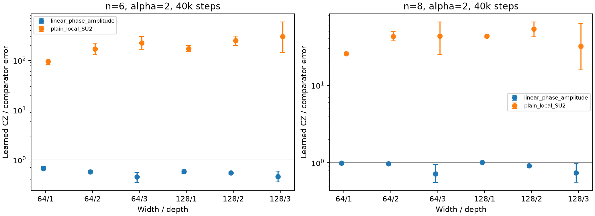
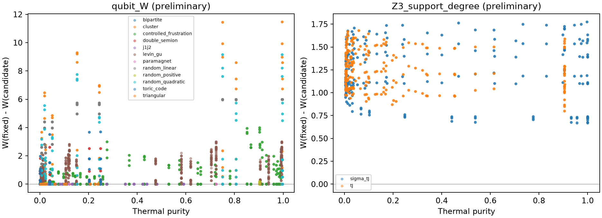

完成分析时间：2026-10-26T21:09:39.663098+00:00。原方案：设计稿 / 配置。
主网格及能谱自适应补充共 3798 点。另有54个三角格纯态投影盲扫描及54个初始化复核、160个随机控制、独立迁移与物理诊断，以及1728次网络训练。全部109项测试通过。逐项证据审计链接配置中的全部叶子要求；完整大尺寸盲网格受原方案的条件门槛约束。
| 轨道 | 主网格点数 | 实际覆盖 | 结论 |
|---|---|---|---|
| A | 621 | n=6/8 完整盲扫描；n=10/12 共72组完整算符控制 | Marshall、cluster、正矩阵和随机相位控制通过；控制成功不算新物理发现 |
| B | 180 | 3×3 PBC Gibbs；54个基态/激发态投影；3×4 OBC 冻结迁移 | 无稳定盲 Huse–Elser 指纹；324个纯态迁移评分中无正下置信界 |
| C | 144 | n=12 全 Gibbs 108点；n=12/18 匹配扇区纯态36点 | 无经验证的盲回路规则恢复；40个同模长随机相位控制 |
| D | 279 | n=9 全 g 网格和低温补充；独立 n=12 冻结迁移 | 全部28种初步候选未通过独立温度共同标准；逐门对称类别另列 |
| E | 1512 | 6/8站点全部链、环和梯子 qutrit扫描；10/12站点72组传播核诊断 | 闭合路径恒等式通过；端点拟合与路径相位分别解释；优化值已用 float64 核复算 |
| F | 1062 | n=6/8全参数扫描；边界CZ迁移到n=12；大尺寸J1–J2谱/图验证 | λ=0.4发现有限范围边界修正；相邻耦合和计算收益限制明确 |
源点 n=6、λ=0.4、β=4、α=2 的纯度为 0.867287。24个通用局域初值、每类相位电路16个初值×2000次提案；不输入已知符号公式。三个优化种子得到左右反射等价的单个边界 CZ：作用于距开边界第二条键。以该冻结规则测试，留出加权相位误差从最佳一次规则的 0.026739 降至 0.016545，改善 0.010195，条目 bootstrap 95% 区间 [0.004613, 0.019873]。
只按离边界距离迁移，β=3/5、n=6/8/10/12、两个截断下均通过 λ=0.4 检验；最小改善 0.005522。n=8 的三个种子还得到两侧各一个 CZ 的同一规则；其独立检验最小改善 0.012907、最小下置信界 0.006156。λ=0.35/0.45 并非全部通过，因此结果限定在被检验的边界修正与参数点。
这些 bootstrap 区间描述固定算符留出条目的变化；有限条目存在相关性，扫描还包含多重比较，不能把它当作热力学极限或经过多重比较校正的发现 p 值。完整支持图仍可有负闭环，修正不表示彻底消除了符号阻碍。
B：使用真正的 Huse–Elser 开角三自旋模板，连续 U(1) 拟合分别比较一次、三子格和三体项。已知复变分态的三体模板控制误差约2.5×10⁻¹²；真实本征态和 Gibbs 态不被当成精确 HE oracle。单个实本征矢在简并固定 Sz 空间中的选择并不唯一，纹理或三子格轴相关不构成相位规则证书。
C：2×2 honeycomb 的匹配真空支持仅有8个配置，DS相位在该小支持上可等价于一次规则；2×3的32配置支持提供非线性检验，但本轮盲候选没有恢复稳定回路规则。测试的 n=12 投影 commuting Hamiltonian 中 TC/DS 全谱和同温度元素模长一致，纯度匹配残差小于1.5×10⁻¹⁵；这一有限实现的结果不推广到任意热激发模型。回路 oracle 只用于闭合回路支持。
D：保持 Z2 的局域门逐门检查；对称单点 Rx 族的 W 不变，对称对角门使用明确受限的互补真值表族。独立 strange correlator 与全局对称检查另列。28种不同初步正候选（34次出现）全部未通过 β=0.75/1.5 的共同标准，选定候选的 n=12 冻结迁移也失败。结论限定于已测试的门族和预算。
E：所有模型保持一个空穴和指定 Sz 的原始扇区，使用保空穴的局域 U(1)⊕SU(2) 变换以及 qutrit Z3 频率支持度。96组闭合路径统计均无 phase-string 恒等式违例；路径是未加 QMC 权重的事件随机游走。n=10/12使用64个精确传播核列、64个随机迹探针与完整 Hamiltonian 支持图，未声称覆盖完整热态支持。自旋–空穴关联、基态通量响应和端点拟合提供独立物理对照。
| n | 比较基线 | 不同条件数 | CZ 较好且配对区间不跨相等 | 基线较好且配对区间不跨相等 | CZ / 基线误差比范围 |
|---|---|---|---|---|---|
| 6 | linear_phase_amplitude | 6 | 6 | 0 | 0.455–0.669 |
| 6 | plain_local_SU2 | 18 | 0 | 18 | 94–1.75e+03 |
| 8 | linear_phase_amplitude | 6 | 3 | 1 | 0.716–1.01 |
| 8 | plain_local_SU2 | 18 | 0 | 18 | 25.6–536 |
表中误差为全矩阵相对 Frobenius 误差平方，40k步，8个配对初始化；同一行比较相同宽度、深度、步数、分配参数量和估计密集核 FLOPs。正幅度模型有一个未使用的输出头，有效参数少 width+1。1728次训练中有768组不同的表示／架构／种子条件：α仅改变局域 SU2 输入基底，其余模型在不同α下重复，统计不把这些重复当作新增独立样本。
n=6 上六个架构的 CZ 相位幅度模型优于一次相位模型；n=8 收益不稳定。局域 SU2 普通 MLP 在两种尺寸的全部被比较条件下误差更低。完整逐条目 oracle 有额外 d² 相位存储，学习到的 CZ 只有局部门信息但仍有不可消除的相位误差下界。报告参数／FLOPs达到误差阈值的已观察最小值和未达标情况，不插值为精确首次到达时间，也不宣称全局最优。

对角端点 gauge 保持 H 的元素模长，因此 exact worldline γ 不变。相同24初值、150次评估预算下另比较实基的 W 优化和直接符号优化；不会用 Gibbs 矩阵元误差代替路径平均符号。较低 W 并不普适降低 γ。同预算数据。
受控模型还有一个直接的基底对照：逐点 Hadamard 将 H 变为 −ΣZ−0.4ΣXX−0.15ΣX+λΣZZ，其非对角元非正。该对照在全部五个λ上通过回归验证，γ=0。因此原始 Z 编码中的边界相位收益不构成内禀符号问题的证据，也与局域 SU2 MLP 明显更好的结果相容。
63组能谱统一检查 β=4 的基态流形权重；未达到95%的体系补至能谱确定的温度，向上取整0.01，配对 t-J 模型共用较大的所需β。新增360个点保留原优化预算。简并体系的基态流形权重与纯度分别报告；大β下的纯化不称为新相变或混合算符发现。
局域优化24初值×150步；普通 qubit 另有至多30步精修，C 热态20步，C 纯态200步。相位层级共用16×2000提案、至多n个门和深度n；链上无三角时无独立三角CCZ层。所有最低值为该预算找到的结果。仅在原始或明确固定的编码中评分已知相位，不向 SU2 旋转后的标签直接套原回路公式。
JSON总表 · 全部W指标 · 相位评分 · 频谱与尾部 · 能谱、纯度和有效秩 · 109项测试记录 · 源代码与执行版本
复现入口：先运行 python -m pytest，再按原 YAML 与 registration 中清单运行 scripts/run_signrule_round3.py、run_signrule_special.py、run_signrule_loop_thermal.py、run_signrule_adaptive.py；物理评分与独立验证使用同目录独立脚本。历史复算仅用于保留纠错轨迹，新运行直接使用修正后的核。训练权重、完整矩阵、可靠性掩码等大型文件保留本地；GitHub提供压缩标量、最优基底、电路和可行频谱。
